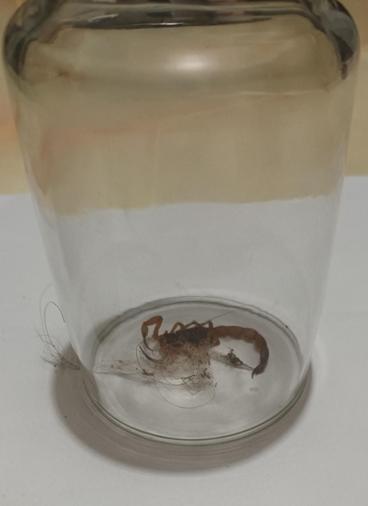

AGOSTO TEM MAIOR INCIDÊNCIA DE ATAQUES DE ESCORPIÃO.
No dia 23 do mês de agosto, uma aluna do ensino médio da Escola Social Marista Irmão Acácio encontrou em seu quarto, um pequeno escorpião amarelo, que poderia muito bem se esconder em qualquer parte da casa e picar alguém. Seja durante o sono, ou caso um membro da família fosse a cozinha ou ao banheiro durante a madrugada. Se não fosse por uma das gatas da casa (a gata passa bem) alertá-la enquanto tentava pegar o escorpião, ela nem mesmo teria o notado, indo dormir com a possibilidade de ter que acordar às pressas para ir ao hospital.
Caso você que está lendo esta notícia não saiba, vale aqui informar que agosto é o mês que ocorre a maior incidência de casos como este, ou casos menos afortunados do que esse mencionado. Então aqui vai o alerta e algumas medidas de prevenção para evitar maiores problemas.
Medidas de prevenção:
Evitar entulhos e limpar a casa frequentemente para evitar o aparecimento de baratas (consequentemente você está fazendo o controle do escorpião pois a barata é alimento para ele e, se você dá alimento para um animal, a tendência é ele se reproduzir);
Fazer uso de tampas nos ralos de banheiro e pias de cozinha e panos nos vãos das portas;
Fazer a manutenção da caixa de esgoto e da caixa de gordura. O escorpião fica entocado durante o dia e sai para caçar à noite;
Evitar que cobertas, lençóis e colchas encostem no chão, porque eles podem subir por elas;
Realizar desinsetização (aplicação de inseticida) regularmente a cada 3 meses.

Fontes: Portal da Prefeitura Municipal de Arapoti
Data da Publicação: setembro de 2023
Por Thalyta das Neves Ferreira (2º ano A)